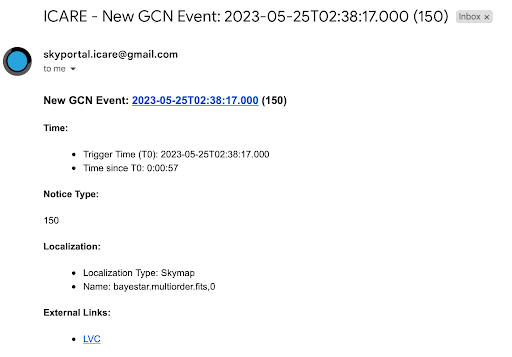
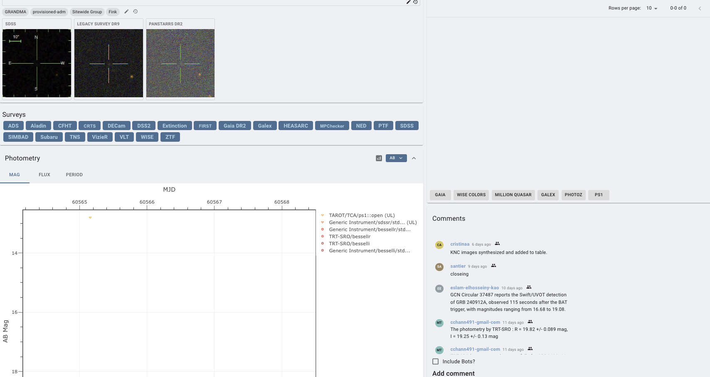

6. Summary: A GW Alert Has Been Received!#
So, you’ve receieved an alert! What’s next?

Via Email or Slack (check #gwalerts):#
Check Event Type:
Click on the external link provided to check the event type.
Look for the same parameters discussed in training:
Preferred event type (BNS, BHNS)
90% and 50% localizations (less than 200 deg²)
Distance (less than 200 Mpc)
If the Alert Meets Criteria:
If it is a BHNS/BNS event and meets one of the criteria for 90%, 50%, or distance, we have the scope to observe it.
Notify the #observations channel on Slack with the message:
"New alert: name of alert; list of parameters. We will now wait for the observation plan to be created."
Wait for Observation Plan:
Go to OwnCloud and wait for an observation plan to be created.
Check if an observation plan has been created by following these steps:
GW > Name of alert > GWEMOPT > Preliminary alert > Tiling/Galaxy targetingOnce the plan is created, update the #observations channel.
Notify Telescope Teams:
Go to SkyPortal and follow the instructions from the cookbook starting at “Notifying Telescopes.”
Update responses using the template both with your teammates and in the #observation channel.
Post to Skyportal comments section about which telescopes are observing and any details surrounding those observations such as the most recent updated parameters found in the #gwalerts channel, who has uploaded images, etc. You can see examples of these comments here:
